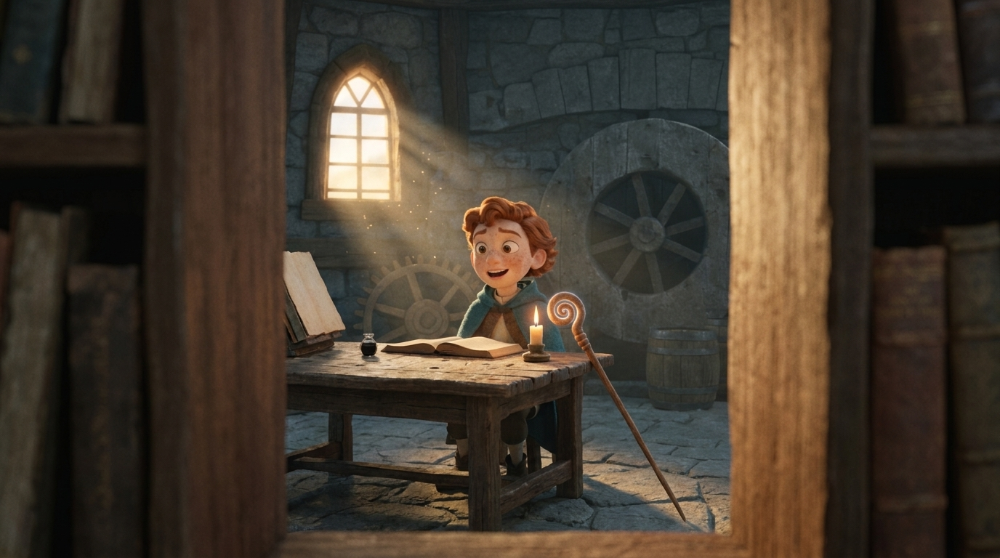
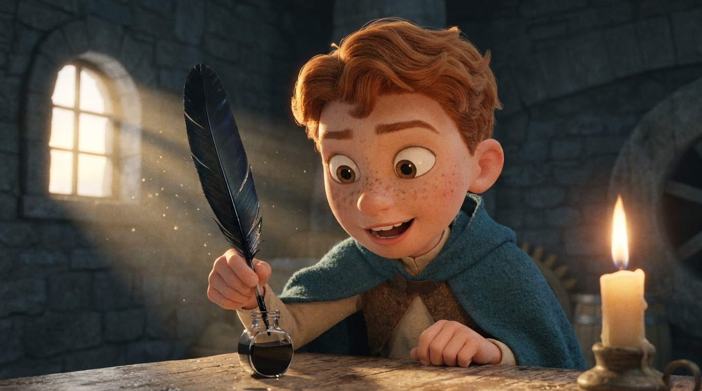
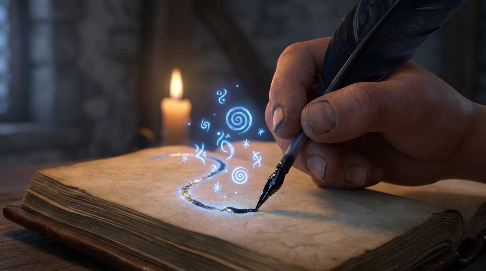
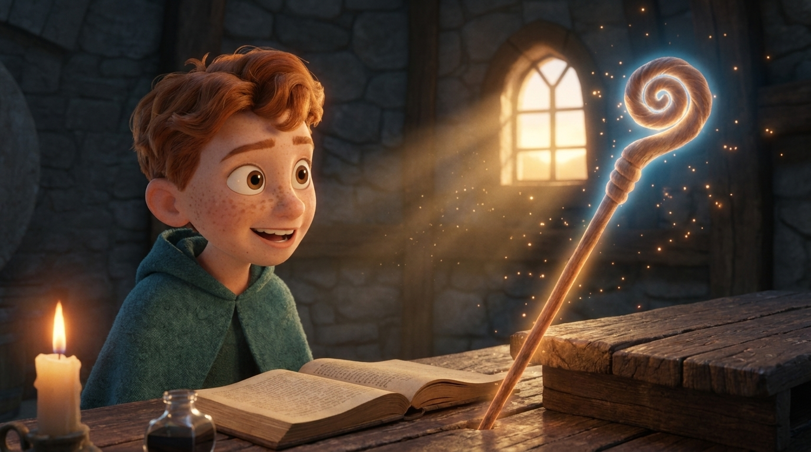
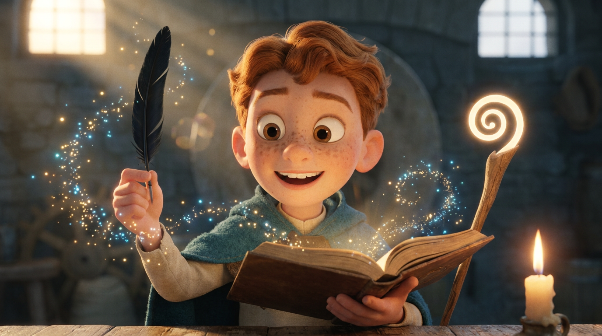

De afgewerkte video
Animatic-preview (stills)






Shotlijst
Door de boekenkast
- CAMERA
- Alsof je tússen twee boeken door de boekenkast kijkt: een boek links en rechts in beeld, vervaagd; Finn scherp in het gat ertussen. Langzame indolly.
- ACTIE
- Finn (kap omlaag, rood golvend haar, sproetjes, bruine ogen) zit enthousiast aan de molenaarstafel; het lege toverboek, het flesje inkt en een brandende kaars staan klaar. Zijn houten staf met gekrulde top gloeit zacht.
- LICHT
- Warm gouden ochtendlicht door de raampjes, zachte godrays.
- GELUID
- Het kraken van hout, een verre uil; ijl belletje-thema zet in.
Higgsfield-prompt
Disney-Pixar style 3D animated movie still… POV peering THROUGH a wooden bookshelf — a blurred book on the foreground LEFT and RIGHT framing the gap. Through it, FINN (red-orange hair, hood DOWN) at a worn table with a blank ancient book, a glass ink vial, and a PLAIN undecorated wooden staff leaning beside him, inside the windmill.
De veer in de inkt
- CAMERA
- Close-up, lichte push-in op zijn gezicht en handen.
- ACTIE
- Finn (kap omlaag) doopt de zwarte ravenveer in het flesje zwarte inkt; de punt van de veer wordt nat en glanzend zwart. Het blijft een veer.
- LICHT
- Magische gloed uit het inktflesje, warme rand-belichting.
- GELUID
- Zacht ‘tsj’ van de inkt, een magische sprankel-toon.
Higgsfield-prompt
Disney-Pixar style 3D animated movie still, cinematic close-up… FINN (hood DOWN) dips a BLACK RAVEN FEATHER (a real feather, NOT a pen) into a glass vial of black ink; the tip is now wet and glossy black, tiny sparkles rising.
De spreuk schrijft zichzelf
- CAMERA
- Extreme close-up op de bladzijde; volgt de pen mee (de kernshot).
- ACTIE
- Op één pagina verschijnen vanzelf gloeiende blauwe magische tékens — spiralen, runen en sterretjes (geen gewone letters) — terwijl de inktveer ze tekent.
- LICHT
- Blauw-gouden gloed weerkaatst op het papier en op Finns gezicht (buiten beeld).
- GELUID
- Zwellend ‘shimmer’, fluisterende koorstem, krassende veer.
Higgsfield-prompt
Disney-Pixar style 3D animated movie still, extreme close-up on ONE single page… a BLACK RAVEN FEATHER with an ink tip traces glowing blue-and-gold MAGICAL RUNIC SYMBOLS and swirling arcane glyphs that appear by themselves — sigils and tiny stars, NOT ordinary letters.
De staf ontwaakt
- CAMERA
- Snelle rack-focus van het boek naar de staf; Finn op de achtergrond.
- ACTIE
- De houten staf met de gekrulde top (géén steen) gloeit nu fel met een warme magische aura; Finn (kap omlaag) kijkt dolblij en verbaasd op.
- LICHT
- Zacht goud-blauw magisch licht uit het hout zelf, vonkjes in de lucht.
- GELUID
- Diepe, warme ‘whoom’ van ontwakende magie.
Higgsfield-prompt
Disney-Pixar style 3D animated movie still… a PLAIN undecorated WOODEN STAFF (no gem, no crystal, no carvings) begins to glow softly with a warm golden-blue aura from the wood itself; Finn (hood DOWN) looks toward it in astonishment.
Eerste magie
- CAMERA
- Heldenshot, langzame uitdolly; sterretjes zweven naar de lens.
- ACTIE
- Finn (kap omlaag) houdt het gloeiende toverboek in de ene hand en de zwarte ravenveer in de andere, en staart in pure verwondering — zijn eerste echte magie.
- LICHT
- Goud van onderaf (boek) + zachte gloed van de gewone houten staf; zachte bokeh.
- GELUID
- Thema zwelt naar een warme piek, dan stilte + één heldere ‘ting’.
Higgsfield-prompt
Disney-Pixar style 3D animated movie still, emotional hero close-up… FINN (hood DOWN) holds the glowing magic book in one hand and a BLACK RAVEN FEATHER (not a pen) in the other, staring in pure wonder, lit by the book’s golden glow and a plain wooden staff.
0610.4–12.6sKlaar om te toveren
- CAMERA
- Heldenshot op halve hoogte, hele figuur; zachte langzame inzoom.
- ACTIE
- Finn (kap omlaag) staat met het gloeiende toverboek in de ene hand en zijn houten staf met de gekrulde top in de andere; de krul gloeit. Kin omhoog, trotse, vastberaden blik — klaar om te toveren.
- LICHT
- Warm goud-blauw van de staf en het boek; zachte ochtendstralen door de raampjes, gesloten molenruimte.
- GELUID
- Laatste warme akkoord houdt aan; een heldere magische sprankel.
Higgsfield-prompt
Disney-Pixar 3D still, dual reference (boy + staff). FINN stands holding the open glowing spellbook in one hand and his wooden staff with a COMPACT tight closed spiral curl (glowing) in the other, proud and confident, ready to cast, inside the closed dim stone windmill, candle on the table, morning light.
Van storyboard naar video
- Bewegende shots: elk still via Higgsfield
image → video(ofmotion_control) animeren: zachte camerabeweging + de gloei/vonken laten leven. ~2 sec per shot, dezelfde volgorde als hierboven. - Overgangen: shot 1→2→3 vloeiende dissolves; 3→4 een korte gloei-flits op het moment dat de laatste letter staat; 4→5 doorbloeien op het licht.
- Tempo: totaal ± 10 sec — shot 3 (het schrijven) krijgt de meeste tijd; shot 4 het ‘ontwaak’-accent.
- Audio: warm orkestraal sprookjesthema, fluister-koortje bij het schrijven, één diepe ‘whoom’ bij de staf, eindigend op een heldere bel.
- Inzet in het spel: deze video speelt zodra de speler de inktveer voor het eerst op het toverboek gebruikt (de
spellWritten-handeling) — bínnen in de molen.
Storyboard · stills gegenereerd in Higgsfield (recraft-v4-1) · niet voor de site — alleen als videoreferentie.